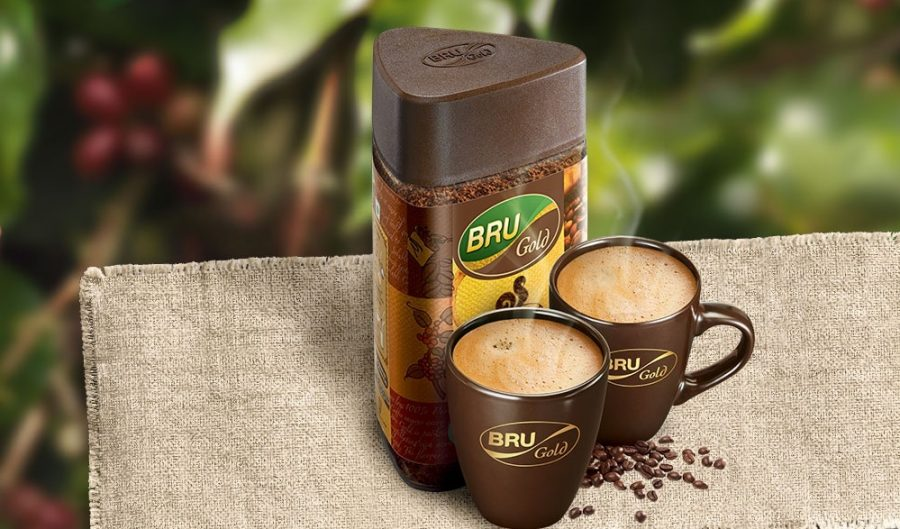
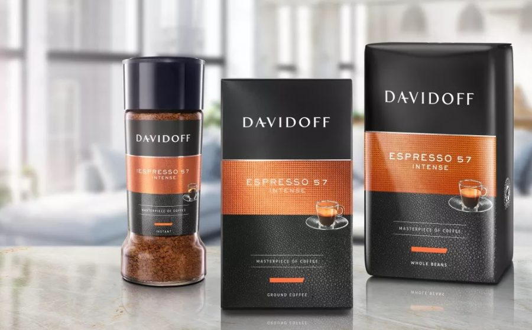
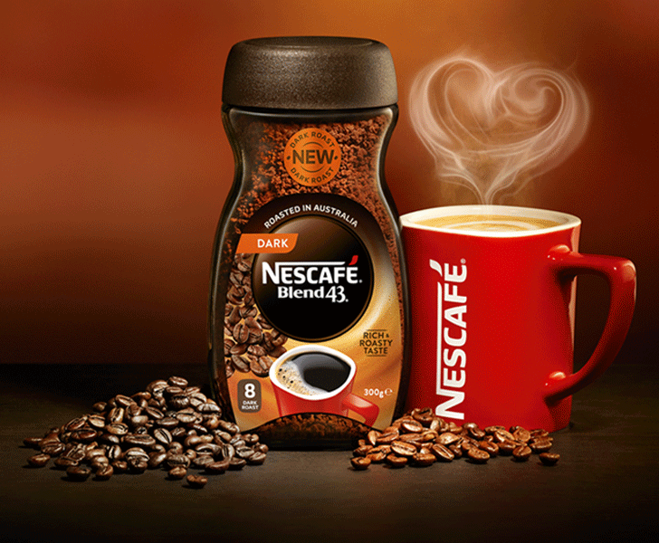
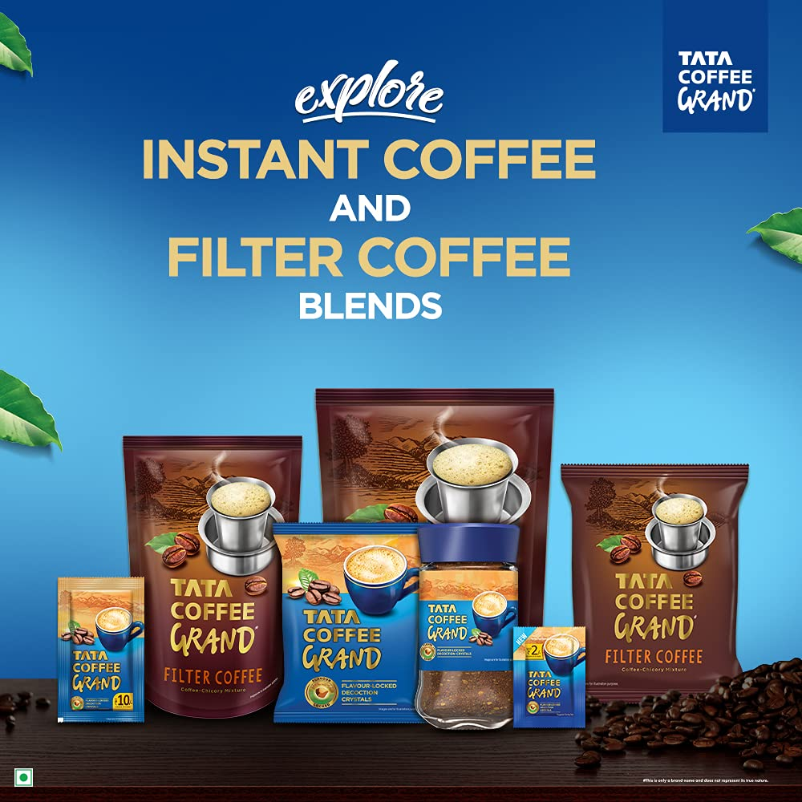

1. BRU
BRU Instant Coffee was launched in 1968 and was India's first coffee- chicory mix instant coffee. It has remained India's No. 1 coffee brand since then. It is made from a fine blend of the choicest plantation and Robusta beans.
Bru Gold
Instant Coffee offers you t
he authentic taste of coffee in its purest form. It is 100% pure coffee with a perfect blend of high-quality Arabica and Robusta coffee beans which are sourced from the finest plantations of South India.
1..Is Bru coffee Indian brand?
A part of Hindustan Unilever ltd., BRU Coffee is India's largest and favourite coffee brand that offers a wide variety of coffee products. Since 1968, BRU has been a pioneer in bringing the authentic taste of coffee to Indian consumers.

2. DAVIDOFF
For all those who appreciate a mild premium coffee still full of character. Davidoff cafe fine aroma is available as whole beans for freshest enjoyment
Is Davidoff a good brand?
Today, the DAVIDOFF brand resonates throughout the globe as one of the ultimate touchstones for exclusivity. Superior quality and authenticity make DAVIDOFF a synonym for cosmopolitan luxury. The legacy of DAVIDOFF's unique sense of quality and art de vivre is reflected in each DAVIDOFF fragrance.

3. NESCAFE
NESCAFÉ became very popular with the American Soldiers in World War II and its popularity has grown from there. ... Globally, NESCAFÉ is consumed at a rate of more than 4,000 cups every second!” NESCAFÉ has become more and more successful as they have strived for continuous improvements and innovations.
Is Nescafe Indian brand?
It was launched in 1938 in Switzerland and has been popular across various countries. Nescafe is one of the most loved and oldest coffee brands in India. It has many manufacturing units and coffee machines set up at many public places due to its popularity.

4. TATA COFFEE.
Tata Coffee Products. The Company major products include green bean, instant coffee, tea and pepper, with vertical integration into Eight O' Clock Coffee and Tata Coffee Vietnam. Tata coffee products are sought after by global roasters, instant coffee players and tea and pepper markets.
Why Tata Coffee is increasing?
According to stock market experts, this rise in Tata Coffee shares is due to the spike in coffee price in the international market. ... They went on to add that street has gone highly bullish on the counter as beverage company is expected to get margin benefit due to the rise in coffee price in the international market.
